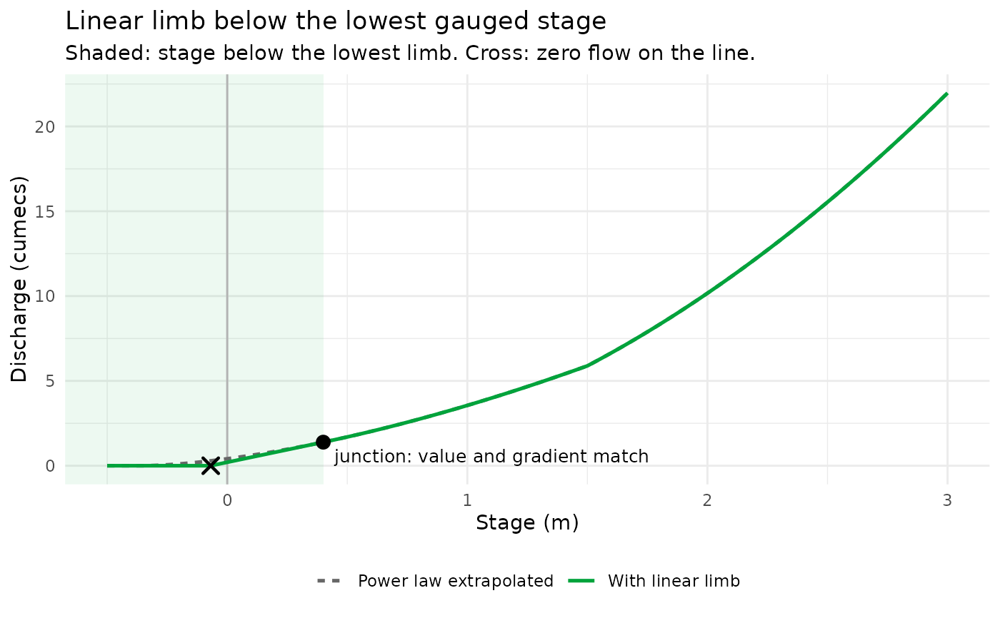
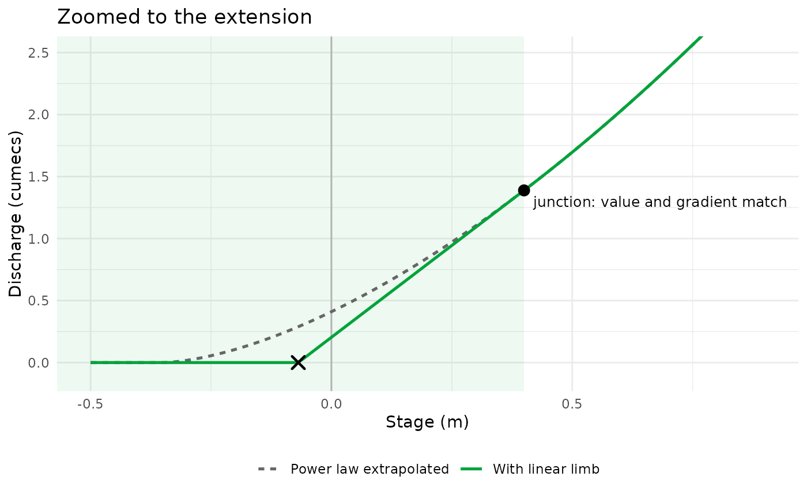

Add a linear limb below the lowest limb of a rating
Source:R/extend_rating_low.R
extend_rating_low.RdBelow its lowest limb a rating normally extrapolates that limb's power
law downwards, flagged but unchecked. That is poor behaviour where the
stage record can fall below the lowest gauged stage, and especially
where stage values are negative, because the power law's slope is then
set by a datum a that no gauging constrains. extend_rating_low()
replaces that extrapolation with an explicit, user-requested linear
limb that joins the lowest limb smoothly: same discharge and same
gradient at the junction stage.
Write the lowest limb as Q = C(H - a)^n and let h be its
lower_level. The new limb is the tangent line to that curve at h:
$$Q = Q_h + m (H - h), \quad Q_h = C(h - a)^n, \quad m = nC(h - a)^{n-1}.$$
This line reaches zero discharge at
$$H_0 = h - (h - a)/n,$$
so it is stored as an ordinary row of the equation table with
C = m, a = H_0 and n = 1: Q = m(H - H_0) is the same line. No
new column or class is needed, and apply_rating(),
apply_rating_inverse(), apply_rating_interval(), detect_rc_gaps()
and the plotting functions all evaluate it correctly. Discharge is
floored at zero below H_0, as it is for any limb.
The lowest limb is not altered. Because the line is tangent to a power
law with n > 1 (which lies above its tangent) the new limb gives
slightly less discharge than extrapolating the power law would; for
n < 1 it gives slightly more. For n = 1 the two are identical.
Arguments
- rating
A FlodeRating, a FlodeRatingTable, or a data.frame/data.table with
lower_level,upper_level,C,aandn, one row per limb, contiguous. AFlodeRatingis bridged throughas_rating_table()first.- lower_stage
Numeric or
NULL. Stage at the bottom of the new limb, which must lie in[H_0, h). The defaultNULLusesH_0, the stage at which the line reaches zero discharge. A larger value (e.g. the lowest stage you expect to see) is allowed; stage below it is then treated as extrapolation and flagged byapply_rating(), though the same line is still evaluated.
Value
A FlodeRatingTable with @status "extended_low",
@previous holding the rating exactly as passed in (when that was a
FlodeRating or FlodeRatingTable), and @table gaining a logical
linear_extension column that is TRUE for the new limb only.
See also
graft_rating() for joining a rating onto one above its top
limb; apply_rating() to use the result.
Examples
# A two-limb rating whose lowest limb has a negative datum (a = -0.35)
# and is gauged down to a stage of 0.4 only. The upper limb's C is set
# so the two limbs meet exactly at a stage of 1.5.
q_join <- 2.2 * (1.5 + 0.35)^1.6
rating_dt <- data.table::data.table(
lower_level = c(0.4, 1.5), upper_level = c(1.5, 3.0),
C = c(2.2, q_join / 1.5^1.9), a = c(-0.35, 0), n = c(1.6, 1.9)
)
plain <- FlodeRatingTable(table = rating_dt)
# Opt in to the linear limb below the lowest gauged stage
extended <- extend_rating_low(plain)
extended@table
#> lower_level upper_level C a n linear_extension
#> <num> <num> <num> <num> <num> <lgcl>
#> 1: -0.06875 0.4 2.961962 -0.06875 1.0 TRUE
#> 2: 0.40000 1.5 2.200000 -0.35000 1.6 FALSE
#> 3: 1.50000 3.0 2.724734 0.00000 1.9 FALSE
# Stage records that dip below the lowest gauged stage, including
# negative values
stage_dt <- data.table::data.table(stage = seq(-0.5, 3.0, by = 0.01))
with_ext <- apply_rating(extended, stage_dt)
#> INFO [2026-11-06 10:44:54] apply_rating(): 44 of 351 stage value(s) fell outside the rating and were extrapolated.
without <- apply_rating(plain, stage_dt)
#> INFO [2026-11-06 10:44:54] apply_rating(): 90 of 351 stage value(s) fell outside the rating and were extrapolated.
curves <- data.table::rbindlist(list(
data.table::data.table(stage = with_ext$stage, discharge = with_ext$discharge,
rating = "With linear limb"),
data.table::data.table(stage = without$stage, discharge = without$discharge,
rating = "Power law extrapolated")
))
# Where the pieces sit
h <- rating_dt$lower_level[1] # junction stage
h0 <- extended@table$a[1] # zero-flow stage of the line
q_h <- rating_dt$C[1] * (h - rating_dt$a[1])^rating_dt$n[1]
library(ggplot2)
base_plot <- ggplot(curves, aes(stage, discharge, colour = rating, linetype = rating)) +
annotate("rect", xmin = -Inf, xmax = h, ymin = -Inf, ymax = Inf,
fill = "#00A33B", alpha = 0.07) +
geom_vline(xintercept = 0, colour = "grey70") +
geom_line(linewidth = 0.9) +
annotate("point", x = h, y = q_h, size = 3) +
annotate("text", x = h, y = q_h, label = " junction: value and gradient match",
hjust = 0, vjust = 1.6, size = 3.3) +
annotate("point", x = h0, y = 0, shape = 4, size = 3, stroke = 1.2) +
scale_colour_manual(values = c("With linear limb" = "#00A33B",
"Power law extrapolated" = "grey40")) +
scale_linetype_manual(values = c("With linear limb" = "solid",
"Power law extrapolated" = "22")) +
labs(x = "Stage (m)", y = "Discharge (cumecs)", colour = NULL, linetype = NULL,
title = "Linear limb below the lowest gauged stage",
subtitle = "Shaded: stage below the lowest limb. Cross: zero flow on the line.") +
theme_minimal() +
theme(legend.position = "bottom")
base_plot

# Zoomed to the extension itself: the line is the tangent at the
# junction, and reaches zero flow before the power law does
base_plot +
coord_cartesian(xlim = c(-0.5, 0.9), ylim = c(-0.1, 2.5)) +
labs(title = "Zoomed to the extension", subtitle = NULL)

# Discharge from the extended rating matches the plain one above the
# junction, and is exactly zero below the line's zero-flow stage
stopifnot(isTRUE(all.equal(with_ext$discharge[with_ext$stage >= h],
without$discharge[without$stage >= h])))
stopifnot(all(with_ext$discharge[with_ext$stage <= h0] == 0))